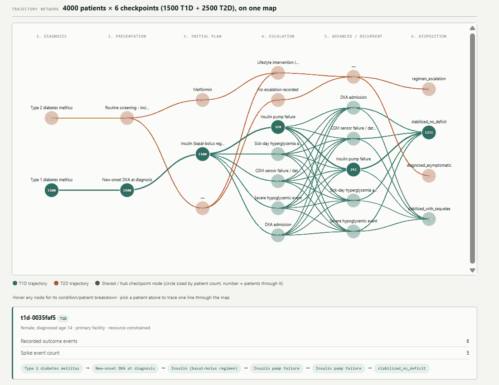

A hands-on tour of a synthetic Type 1 vs. Type 2 diabetes demo — what it is, how to run it, and what it can teach you about analyzing patients instead of diagnoses.
Scope note, up front: everything described here runs on synthetic, seeded patient data (9 T1D + 9 T2D records in the core pipeline, an 18-patient sample in the nested view below). Nothing in this project touches real PHI, and it is not clinical decision support or a validated system. Treat it as a learning sandbox for a data-modeling idea, not a tool for patient care.
Most clinical dashboards start from a diagnosis and ask "how are my T2D patients doing?" This project starts from the person and asks a different question: what if every patient — regardless of disease — was represented as the same shape of graph, so that comparing across diseases, cohorts, or facilities becomes a matter of re-slicing one dataset instead of building a new report each time?
That shape is a simple, four-stage chain repeated for every patient:
Observations → Diagnosis → Interventions / Plan → Outcomes
Every tool in this project reads and re-presents that same graph. Nothing about the underlying data structure changes between a Type 1 diabetes patient and a Type 2 diabetes patient — only the values on the nodes differ. If that sounds unremarkable, it's the point: the interesting engineering question isn't "can I build a T1D dashboard and a T2D dashboard," it's "can I build one dashboard that doesn't know or care which disease it's looking at."
T1D and T2D are both "diabetes" in casual conversation, but as data-generating processes they look almost nothing alike:
| Type 1 DM | Type 2 DM | |
|---|---|---|
| Clinical pattern | Irregular, acute glycemic spike events (autoimmune, insulin-dependent from diagnosis) | Slow, branching regimen progression — diet → oral agents → insulin, escalated over years |
| The clinically interesting question | Which delivery device is in use (pump vs. injection)? | When was insulin added to the regimen (early vs. delayed initiation)? |
| Shape of the data over time | Spiky, event-driven | Smooth, stage-driven |
That contrast is deliberate. If a single graph schema and a single set of rendering functions can honestly represent both an acute-spike disease and a slow-branching disease without special-casing either one, that's reasonably strong evidence the model generalizes — which matters if you ever wanted to extend it beyond diabetes.
The "one shape for every patient" claim in Section 1 rests on a specific knowledge-graph schema. It's worth seeing the whole thing before the walkthrough, because Steps 2–6 are really just five node types and five edge types, read and re-rendered five different ways.
| Node | Attributes |
|---|---|
PatientNode | Anonymized ID, baseline demographics, immutable patient-level context |
ObservationNode | Raw text / SNOMED-LOINC code, severity, timestamp or sequence order |
DiagnosisNode | Term/phrase text, confidence level, primary vs. secondary/comorbidity |
InterventionNode | Action type, target, parameters (dose/frequency); stripped of strict temporal metadata for holistic viewing |
OutcomeNode | Resulting status, response to plan, adverse events, discharge state |
The five edges carry the clinical logic — note that comorbidities and raw observations can each independently push back on the intervention, not just feed forward into it:
(Observation) -[:SUGGESTS]-> (Diagnosis)(Diagnosis) -[:INDICATES_PLAN]-> (Intervention)(Intervention) -[:PRODUCED_OUTCOME]-> (Outcome)(ComorbidityDiagnosis) -[:MODULATES]-> (Intervention)(Observation) -[:CONSTRAINS]-> (Intervention)Time itself is modeled as a property on the edges ({timestamp: t1}, {atemporal_bundle: true}, {time_to_outcome_delta: d}) rather than as a rigid node sequence — that's the actual mechanism behind the Step 3 atemporal/temporal toggle. Flipping the toggle doesn't swap datasets; it just tells the renderer whether to read the timestamp properties on the same edges or ignore them.
Step 4's "re-anchor without re-loading" is one instance of a more general idea from the concept article: the same person-centered graph supports three interchangeable anchors.
| Lens | Anchor | Clinical question |
|---|---|---|
| Disease-centered | Diagnosis node | Given patients diagnosed with X, what presentations walked in, and what did we do? |
| Intervention-centered | Intervention/Plan node | When we deploy intervention Y, who actually receives it, and how do outcomes vary? |
| Disease + intervention combo | Composite hyper-node | When Diagnosis A patients receive Intervention B, why do outcomes diverge — and what explains the variance? |
Step 5's comparator matrix is the small, working version of a larger framework the concept article sketches for scaling this beyond one demo cohort to a global population: a population anchor normalized via SNOMED CT, an intervention anchor normalized via LOINC, and a comparator layer that can subgroup by outcome, by intervention detail (dosing, timing), or by time-of-intervention — all further weighted by facility tier (primary/secondary/tertiary/quaternary) and resource gradient (resource-plenty vs. resource-constrained), so that a spike in complications gets flagged as possibly infrastructure-driven rather than silently blamed on the clinical decision. The facility_tier and resource_status tags Step 1 attaches to every synthetic patient exist specifically to make that weighting demonstrable in Step 5 and Step 6.
Worked example, from the concept article: "Show me patients with [disease combo] who received [intervention], filtered by [resource-constrained tertiary facilities], broken down by [temporal time-of-intervention subgroups], and map [my current patient's] trajectory against that specific comparator curve." Step 5's one-click "Load example query" button reproduces a version of exactly this.
T1D vs. T2D isn't the project's original test case. The person-centered model was first sketched against ASV (anti-snake-venom) treatment for snakebite envenomation — a single-encounter, acute-care scenario built on an earlier 12-case "Critical Hub Node Navigation" demo, where the interesting comparator question was dosing timing (a "golden hour" ASV administration within 2 hours vs. a delayed one past 6 hours) against a fixed intervention window of days, not years.
The T1D/T2D pilot documented in this walkthrough was deliberately chosen as the second test case because it stresses the model in the opposite direction: instead of one bounded decision window, diabetes management is a decades-long, evolving regimen. Running an acute single-encounter condition and a chronic multi-decade condition through the identical five-node graph schema is a stronger generalization test than either pilot alone — which is exactly what Step 7's audit is checking for.
The seven build steps form a literal data pipeline — each step downloads a JSON file the next step loads:
| Step | Question it answers | Reads | Produces |
|---|---|---|---|
| 1 — Corpus generator | Where does the data come from? | — (generates it) | dm_corpus.json |
| 2 — Graph builder | How does raw data become a graph? | dm_corpus.json | cohort_graph.json |
| 3 — Dashboard | What does the graph look like per patient / per cohort? | cohort_graph.json | (read-only view) |
| 4 — Pivot lens | What if I re-center on a diagnosis or intervention instead of a patient? | cohort_graph.json | (read-only view) |
| 5 — Comparator filter | How do I compare matched subgroups? | cohort_graph.json | (read-only view) |
| 6 — Clinical output view | How is this shown to a clinician, plainly? | cohort_graph.json | (read-only view) |
| 7 — Generalization check | Does the code actually generalize across diseases? | the Step 2–6 source | written verdict |
Everything runs client-side in the browser (plain HTML/JS, no server, no upload) — you can open each file locally and follow along.
Live links: guided tour · concept article (Part 1) · build log (Part 2)
Generates FHIR-flavored JSON bundles (Patient, Condition, Observation, MedicationRequest, Encounter) for a small seeded cohort — 9 T1D and 9 T2D patients by default. Each record is tagged with facility_tier, resource_status, and a disease-appropriate timing field.
What to notice: open one T1D record next to one T2D record. The T1D record has irregular spike events; the T2D record has a slow, staged regimen. That contrast — generated by two genuinely separate, hand-authored generator functions — is the raw material the rest of the pipeline has to handle without cheating.
Turns the raw corpus into a knowledge graph with five node types (PatientNode, ObservationNode, DiagnosisNode, InterventionNode, OutcomeNode) connected by relational edges (SUGGESTS, INDICATES_PLAN, PRODUCED_OUTCOME, MODULATES, CONSTRAINS). This is the same function for every patient, T1D or T2D — the disease only shows up as a value on a node, never as a fork in the code.
Loads the graph and renders it two ways behind a single toggle:
What to notice: flip the toggle on a T1D patient and a T2D patient. The same rendering logic produces a spiky trajectory for one and a smooth branching one for the other — because the shape difference lives in the data, not in a disease-specific rendering branch.
Instead of a fixed patient-centric view, you can re-index the same graph around a Disease-centered, Intervention-centered, or combined Disease + Intervention anchor. Switching lenses doesn't reload data — it's a different query over the same graph.
Three independent filter layers: a population filter (T1D / T2D / all), a disease-appropriate intervention-timing filter, and a comparator matrix (outcome × facility tier × resource status) with a group-by control. There's a one-click "load example query" button that reproduces a worked comparison end-to-end.
Re-presents what Steps 3–5 already established, but organized the way a clinician would want to read it: a T1D/T2D evidence card pair, a variation table broken out by facility tier and resource status, and — most importantly — a Confounders section listing every approximation and data gap in the demo, kept visible via a sticky banner.
What to notice first, before anything else on this page: the Confounders section. It's the most useful part of the whole demo, because it tells you exactly which numbers not to over-trust.
A written audit (not an interactive tool) that scans the real source code of Steps 2–6 for every place disease type is referenced, and classifies each occurrence as:
Verdict: mostly confirmed, with two flagged exceptions, both isolated to the comparator layer:
patientHasPumpEvidence() infers pump-vs-injection from free text in OutcomeNode.reason — a hack that's only meaningful for T1D, because the synthetic corpus never gave delivery modality a first-class field for either disease. Flagged in-UI as an amber assumption note in Steps 4 and 5.condition_type because T1D and T2D genuinely have different clinically meaningful timing questions (device choice vs. initiation delay) — there's no single generic field that captures both, so this is an intentional, disease-appropriate exception rather than a gap.Steps 3–6 each show one lens at a time — a toggle, an anchor, a filter, a summary. The Nested Analysis View is a companion page that goes a level further: it takes the same cohort_graph.json and nests every patient's trajectory into a single alluvial-style network, T1D and T2D overlaid on shared nodes.
Every patient — regardless of disease — walks the same six generic checkpoints:
Diagnosis → Presentation → Initial plan → Escalation → Advanced/recurrent → Disposition
Where two or more patients land on the same value at the same checkpoint, their lines are drawn through one shared node instead of parallel ones, so the map visually surfaces convergence (many patients funneling through the same checkpoint — a "hub") and divergence (paths splitting apart) at a glance. Pick any single patient and their path highlights against the rest of the cohort, answering "how is my patient moving relative to everyone else on the same map?"

stabilized_no_deficit disposition hub on the right.The page ships with a sample cohort but works with any cohort_graph.json you generated yourself in Step 2 — the screenshot above happens to show a larger 4,000-patient example (1,500 T1D + 2,500 T2D), which is exactly the kind of scale where the "one shared map" idea pays off: at that size, no one is reading 4,000 individual trajectory lines one at a time, but the hub nodes still tell you at a glance where the cohort funnels and where it diverges.
What to notice: hover a hub node — the tooltip breaks down how many T1D vs. T2D patients pass through it. In the screenshot, notice how the "Insulin pump failure" and "DKA admission" hubs sit almost entirely in T1D's teal territory, while T2D's rust line stays comparatively sparse through Escalation and Advanced/Recurrent before both conditions converge again at Disposition. Then check the confounder note below the map: T1D patients tend to populate the "Escalation" and "Advanced/Recurrent" columns much more densely than T2D patients do, simply because the synthetic corpus gives T1D more recurring event density (irregular spike events over years) than T2D (which the corpus mostly logs as one or two outcome nodes). The page is explicit that this is a real difference in event density per disease, not a rendering gap — the same generic six-checkpoint structure is used for both, consistent with the Step 7 audit.
Try the Nested Analysis View live →
Why it's worth the extra step: Steps 3–6 teach you to read one patient or one filtered subgroup at a time. The Nested Analysis View teaches a different, complementary skill — reading an entire cohort's shape at once, spotting which checkpoints act as bottlenecks or common outcomes across dozens or thousands of trajectories simultaneously, without losing the ability to drop back down to a single patient's line.
Beyond "diabetes has two subtypes that look different," the exercise is really teaching a handful of transferable analytics habits:
node_type, term, target, status) instead of on the disease name. That's the difference between code that scales to more diseases and code that grows a new if branch every time.dm_corpus.json.cohort_graph.json.cohort_graph.json into each via the file-load control.cohort_graph.json (or click "Load sample data" to fetch a hosted example) to see the whole cohort's trajectories on one map.Everything runs entirely in your browser; nothing is uploaded anywhere, and no real patient data is involved at any stage.
cohort_graph.json? Skip straight to Steps 3–6 above and load it into whichever lens interests you.Person-centered clinical analytics — synthetic data only, not for clinical use.